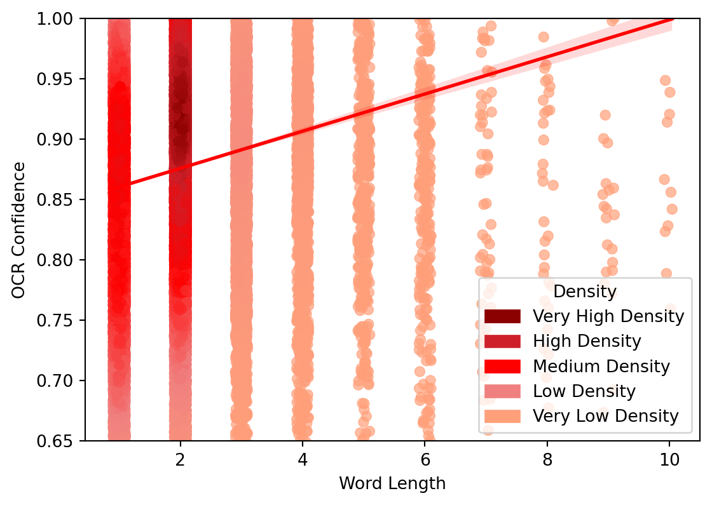
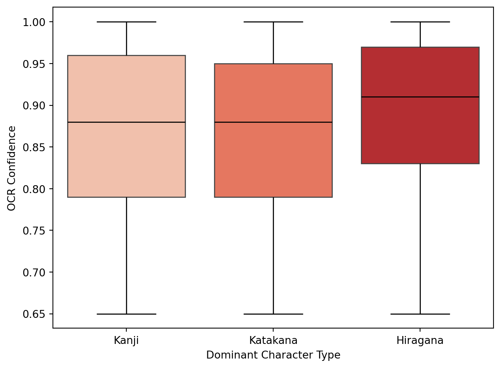
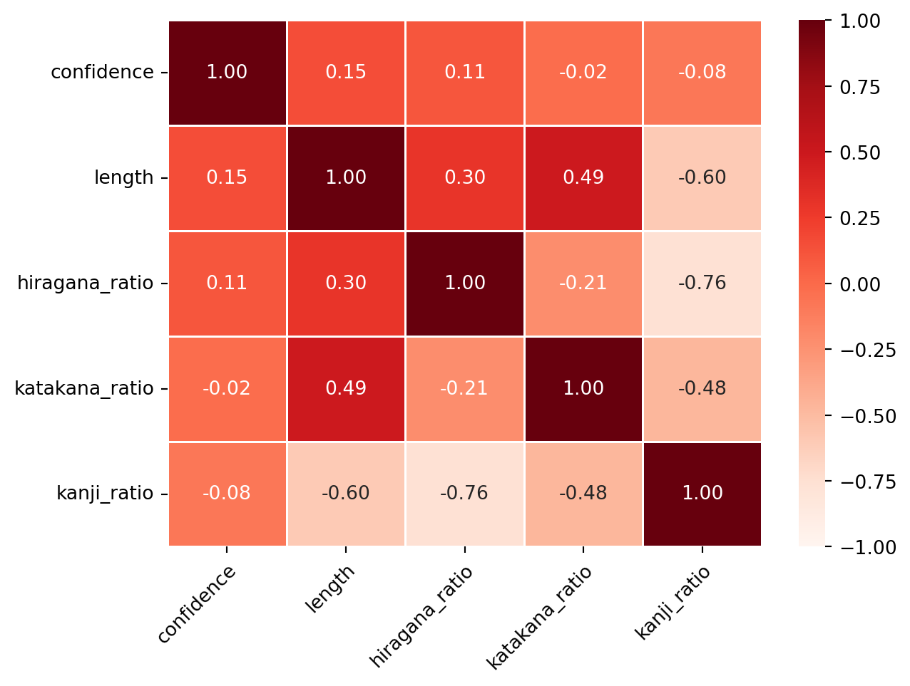
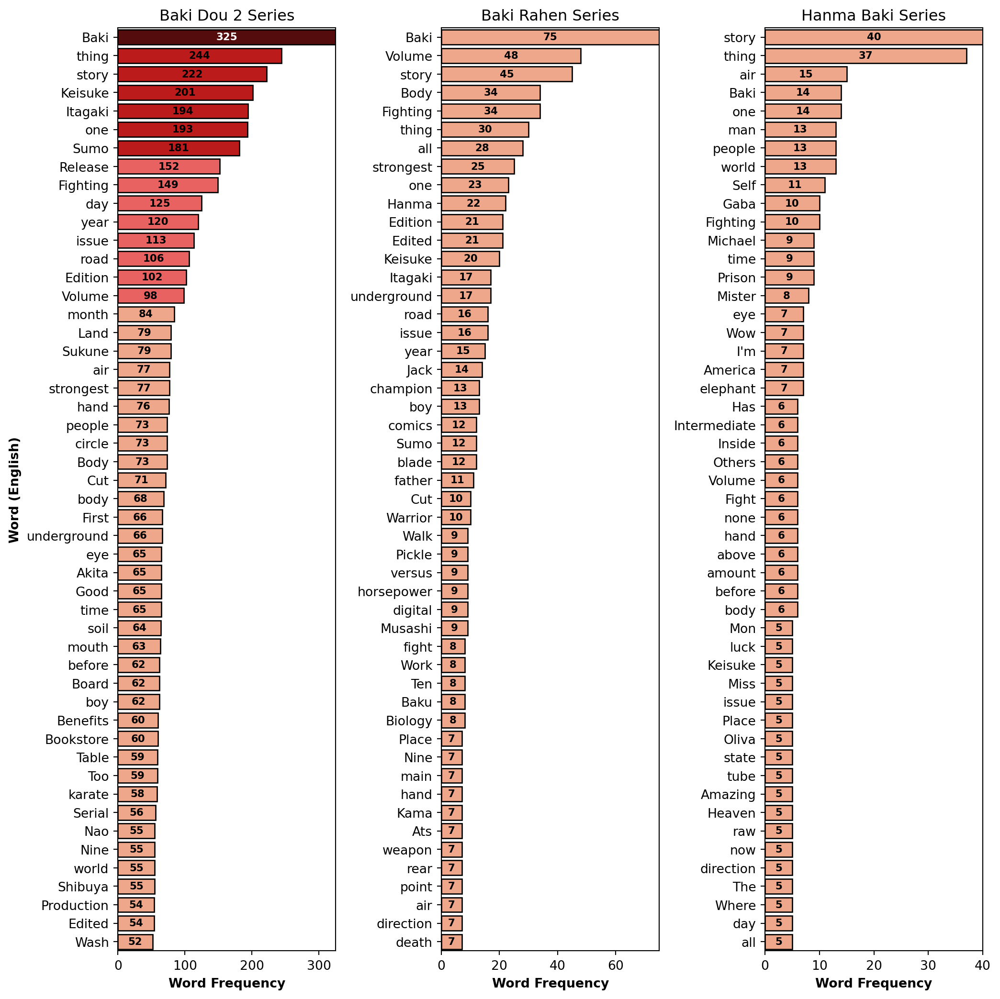
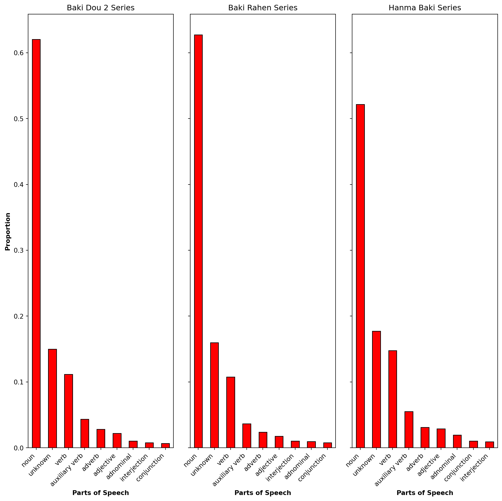
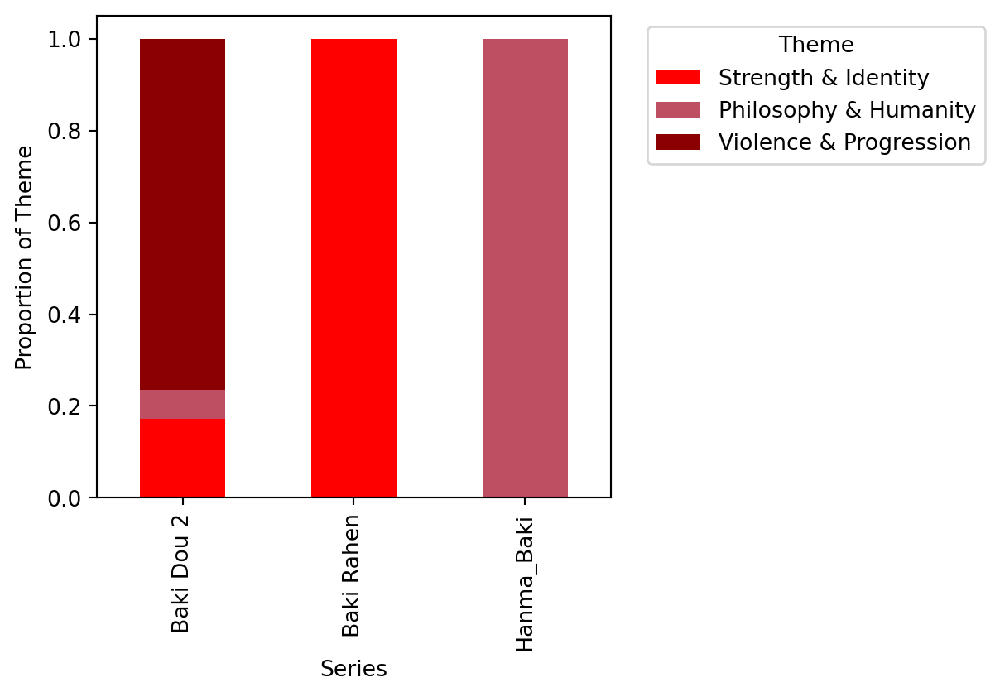

A Data Science Approach to Understanding Language in Baki
Author
Andrew Nemkov
Manga Panel of Hanma Baki.
Motivation & Background
“強くあろうとする姿はかくも美しい”
The short Japanese phrase above translates literally to “That who has a strong frame is beautiful”. In a more general sense, it conveys the idea that one’s body, once properly trained and developed, expresses more beauty than traditional features such as one’s face.
This often complicated and multi-layered idea is a foundational theme in the Japanese comic book style manga of Grappler Baki. In the story, a 17 year old boy by the name of Baki spends countless hours training and developing himself physically and mentally to one day stand in front of his father, the “strongest creature alive”, and challenge him in martial combat.
Grappler Baki is an example of one of today’s few globally recognized Japanese works of visual and textual art that pushes the boundaries to what it means to be masculine. Popular as it is, the work’s origin creates a barrier for those outside of Japan to interact with the manga. As a result of this language gao, the need for this project was born.
Utilizing data science techniques, I aim bridge this gap in linguistics by analyzing the words used withing Baki’s universe. Utilizing the tools of natural language processing, I seek to provide a deeper understanding of the work’s narrative structure and themes that define Grappler Baki.
Dataset Foundation
To undertake such a difficult task of bridging the gap between my English and the Japanese of Grappler Baki, I first needed to create a proper dataset that would contains all the written content used to describe Baki’s story over a large assortment of Japanese manga panels. For this, I discovered a site known as dl-raw.ac that contained downloadable content on various Japanese manga, broken down by series. In this site, I downloaded pages for the three Baki series of my personal choice: Baki Rahen manga series (see Unknown (2025b)), Baki Dou 2 manga series (see Unknown (2025a)), and Hanma Baki manga series (see Unknown (2025c)). In total, the three downloads contained roughly 4000 Japanese manga pages describing various parts of Baki’s life as a fighter.
Validity of dl-raw.ac Website
Some things to note about the website I utilized to get my data:
The site is publicly accessible.
The analysis of this project was performed for non-commercial purposes only.
All source citations were provided.
The data used in this project will not be redistributed.
After gathering the source of my data, I needed a tool that I could use to extract the Japanese text from these images and turn the result into a computer-readable format. For this i utilized Optical Character Recognition (OCR), which would take in a Japanese manga image as input and output extracted Japanese phrases with each having a confidence score for extraction.
For a for detailed explanation on the process of using this machine learning, please see below:
Basic Overview:GeeksForGeeks (2023) and IBM (2024)
imports
fugashi
POS
cleaning text
google translate
tokenize into words
character ratios
changing series folder and name
remake headers
skipping file
grayscaling and denoising
free memory
Parameters
batch size
box detection confidence
box detection size
maximum length
max confidence score
The above image shows the python output in the Visual Studio Code application of the test PaddleOCR code being run on the image titled DL-Raw.Net_111 (2).jpg. As you can see, the OCR model outputs each phrase it extracts with its elapsed time, and in addition after the entire image was processed, the code outputs a success message with a counter to keep track of the total number of images processed by the model.
Dataset Preprocessing
Code
import pandas as pdimport matplotlib.pyplot as pltimport seaborn as snsimport numpy as npfrom scipy.stats import gaussian_kdefrom matplotlib.colors import LinearSegmentedColormapimport matplotlib.patches as mpatchesimport matplotlib.cm as cmimport matplotlib.colors as mcolorsfrom sklearn.feature_extraction.text import TfidfVectorizerfrom sklearn.decomposition import NMFimport warnings#----------------------------------------------------------------# dataset namecsv_file =r"C:\Users\andne\OneDrive\Pictures\Capstone1\capstone\(1)-main\(1)-codeAndData\realData.csv"# make dataframe of datadf = pd.read_csv(csv_file)# remove outliers (words longer than 10 characters)df_filtered = df[df["length"] <=10].copy()# print(df_filtered.head())
After successfully choosing an OCR model, setting it up, and adjusting its parameters, I began my word analysis of my completed dataset by importing the necessary python libraries.
Some important ones to mention are:
The gaussian_kde to help calculate jittering in scatter plot points.
The TfidfVectorizer to properly perform a TF-IDf analysis.
The NMF to separate large word collections into themes by meaning.
In addition to the standard method of reading in a CSV dataset, I also filtered the data to exclude words longer than 10 characters, as this was clearly an tokenization error. This means some words were not tokenized correctly and therefore proper word analysis could not be performed on them. For this reason, I cleaned the data to include only single word entries.
OCR Confidence and Word Complexity
The first part of my analysis involved researching the correlations between an OCR model’s confidence and an extracted word’s complexity. In this case complexity considers both the length of the extracted and tokenized Japanese word as well as the types of Japanese characters that make up this word. Separate analysis of these two simpler relationships can yield significant understanding of what variables most notably decrease an OCR model’s confidence score for a extracted phrase, allowing for better future application of the project.
Word Length Trends
Code
# filter words with more than 15 characterslong_words = df[df["word_JAP"].str.len() >15][["word_JAP", "word_US"]]# print(long_words)#----------------------------------------------------------------# jitter strengthjitter_strength =0.1# Adjust this value as needed# create jittered columnsdf_filtered["jittered_length"] = df_filtered["length"] + np.random.uniform(-jitter_strength, jitter_strength, len(df_filtered))df_filtered["jittered_confidence"] = df_filtered["confidence"] + np.random.uniform(-jitter_strength, jitter_strength, len(df_filtered))#----------------------------------------------------------------# KDE calculation using jittered valuesxy = np.vstack([df_filtered['jittered_length'], df_filtered['jittered_confidence']])kde = gaussian_kde(xy) density = kde(xy) # normalize density valuesnorm_density = (density - np.min(density)) / (np.max(density) - np.min(density))#----------------------------------------------------------------# custom red palette (light red to dark red)custom_reds = LinearSegmentedColormap.from_list("custom_reds", ["#ffa07a", "#f08080", "#ff0000", "#ce2029", "#8b0000"])# question 1 plot 1: scatter plot with density-based coloringplt.figure(figsize=(6.5, 4.5))sns.scatterplot( x=df_filtered["jittered_length"], y=df_filtered["jittered_confidence"], alpha=0.7, hue=norm_density, palette=custom_reds, # Apply custom red gradient edgecolor=None)# Regression linesns.regplot(x=df_filtered["jittered_length"], y=df_filtered["jittered_confidence"], scatter=False, color="red", line_kws={"linewidth": 2})# Set y-axis limit between 0.65 and 1plt.ylim(0.65, 1)plt.xlabel("Word Length")plt.ylabel("OCR Confidence")# plt.title("Scatter Plot: OCR Confidence vs. Word Length (With Jitter & Density Coloring)")legend_labels = [ mpatches.Patch(color="#8b0000", label="Very High Density"), mpatches.Patch(color="#ce2029", label="High Density"), mpatches.Patch(color="#ff0000", label="Medium Density"), mpatches.Patch(color="#f08080", label="Low Density"), mpatches.Patch(color="#ffa07a", label="Very Low Density"),]plt.legend(handles=legend_labels, title="Density", loc="lower right")plt.show()

Figure 1.1: Scatter plot showing relationship between OCR confidence and word length.
Analysis of the relationship between OCR confidence and word complexity begins by understanding the relationship between confidence and word length. I originally speculated that longer words are inherently more complex, therefore it would be more difficult for the model to extract them.
To test this theory I wrote a scatter plot depicting the correlation between word length and OCR confidence. The original result was poorly visualized, so I implemented jittering of the scatterplot points for minimum variety of spacing, as well as added custom labels for five levels of density of points ranging from “Very High Density” to “Very Low Density”. These labels were used to color the points in the graph, with darker red representing higher density and lighter red representing lower density. One final addition to the graphic was the use of a line-of-best-fit to help point the relationship between the two variables.
The results of these adjustments are seen above in figure 1.1, where the features of word length and OCR confidence is positive (unlike my original guess of the relationship being negative). This means that as a Japanese word’s length increases, the chance of it being extracted from a Japanese phrase with higher OCR confidence increases. This result may be explained by the nature of how Japanese words are written, as words written with more complicated characters tend to often be shorter than those written with simpler characters.
Effects of Writing Systems
Code
# hide warnings for readabilitywith warnings.catch_warnings(): warnings.simplefilter("ignore")# function to find dominant character typedef classify_character_type(row): max_ratio =max(row["hiragana_ratio"], row["katakana_ratio"], row["kanji_ratio"])if max_ratio == row["kanji_ratio"]:return"Kanji"elif max_ratio == row["katakana_ratio"]:return"Katakana"else:return"Hiragana"# apply classification df_filtered["char_type"] = df_filtered.apply(classify_character_type, axis=1)# question 1 plot 2: box plot plt.figure(figsize=(7.5, 5.5)) sns.boxplot( x="char_type", y="confidence", data=df_filtered, palette="Reds", whiskerprops=dict(color="black"), # whiskers capprops=dict(color="black"), # caps medianprops=dict(color="black") # median line ) plt.xlabel("Dominant Character Type") plt.ylabel("OCR Confidence")# plt.title("Box Plot: OCR Confidence vs. Japanese Character Type") plt.show()

Figure 1.2: Box plot showing relationship between OCR confidence and Japanese writing systems.
The above visualization of figure 1.2 shows a box plot that visualizes the relationship between OCR confidence and the three types of Japanese writing systems. It is clear that confidence for hiragana dominant Japanese words is higher than for those words who are dominated by kanji and katakana characters. This result explains that more complicated letters such as katakana and kanji are more difficult for the OCR model to process and extract compared to simpler hiragana letters.
Combined Insights
Code
# use only relevant numerical columnscorrelation_data = df_filtered[["confidence", "length", "hiragana_ratio", "katakana_ratio", "kanji_ratio"]]# correlation matrixcorr_matrix = correlation_data.corr()# question 1 plot 3: heatmapplt.figure(figsize=(7, 5))sns.heatmap( corr_matrix, annot=True, # show correlation values cmap="Reds", fmt=".2f", # format numbers to 2 decimal places linewidths=0.5, # add lines between cells for clarity vmin=-1, vmax=1# ensure consistent color scaling)# tilt x axis namesplt.xticks(rotation=45, ha="right", rotation_mode="anchor", x=0.1)# plt.title("Heatmap: Correlation of Word Characteristics")plt.show()

Figure 1.3: Heatmap showing correlation of word characteristics.
The figure 1.3 above is a heatmap that summarizes the findings of the previous two visualizations (figure 1.1 and figure 1.2). It shows the relationships between the features of OCR confidence, word length, the ratio of hiragana in a Japanese word, the ratio of katakana in a Japanese word, and the ratio of kanji in a Japanese word. From the graph, it is clear that an OCR model’s confidence score correlates positively with word length and hiragana ratio, meaning that as a word’s length increases and/or hiragana ratio increases, then the confidence by which it was extracted with also increases. On the other hand, an OCR model’s confidence score correlates negatively with katakana ratio and kanji ratio of Japanese words, meaning that as the katakana ratio and/or kanji ratio of characters in a Japanese word increases, then the confidence by which this word was extracted by the model decreases.
Language Characteristics and Story Telling
aaaaa
Word Frequency Snapshot
Code
# list of useless words to filter outstopwords = {"the", "a", "an", "and", "or", "but", "if", "so", "because","in", "on", "at", "to", "from", "with", "by", "about", "of","is", "are", "was", "were", "be", "being", "been", "am","have", "has", "had", "do", "does", "did", "can", "could","will", "would", "shall", "should", "must", "may", "might","this", "that", "these", "those", "there", "here", "where","when", "how", "say", "said", "tell", "told", "see", "saw","look", "looked", "come", "go", "went", "take", "took","make", "made", "get", "got", "know", "knew", "think","thought", "want", "wanted", "like", "liked", "need","needed", "use", "used", "find", "found", "give", "gave","work", "works", "working", "try", "tried", "ask", "asked","good", "bad", "better", "best", "worst", "big", "small","little", "huge", "tiny", "old", "new", "young", "great","nice", "mean", "strong", "weak", "happy", "sad","I", "me", "my", "mine", "you", "your", "yours","he", "him", "his", "she", "her", "hers", "it", "its","we", "us", "our", "ours", "they", "them", "their", "theirs","yes", "no", "maybe", "okay", "really", "very", "just", "even", "still", "yet","oh", "uh", "um", "hmm", "ah", "haha", "lol", "hmm", "what","it", "the", "not", "is", "no", "of"}#----------------------------------------------------------------# hide warnings for readabilitywith warnings.catch_warnings(): warnings.simplefilter("ignore")# custom red color range custom_reds = ["#ffa07a", "#ff4c4c", "#d60000", "#a00000", "#600000"]# filter for nouns only df_word_freq1 = df[df["word_POS"] =="noun"]# remove words with spaces or numbers df_word_freq1 = df_word_freq1[~df_word_freq1["word_US"].str.contains(r"\s|\d", na=False, regex=True)]# filter out not significant words df_word_freq1 = df_word_freq1[~df_word_freq1["word_US"].isin(stopwords)]# total occurrences of words per series word_counts = df_word_freq1.groupby(["img_series", "word_US"])["word_US"].count().reset_index(name="word_count")# sort by frequency for each series (top 50) top_n =50 word_counts_top = word_counts.sort_values(by="word_count", ascending=False).groupby("img_series").head(top_n)# get global min and max global_min = word_counts_top["word_count"].min() global_max = word_counts_top["word_count"].max()# function to map word count to the custom red color rangedef map_to_custom_reds(value, vmin, vmax): norm_value = (value - vmin) / (vmax - vmin) color_index =int(norm_value * (len(custom_reds) -1))return custom_reds[color_index]# question 2 plot 1: bar graphs fig, axes = plt.subplots(1, 3, figsize=(11, 11))# loop over each series and create individual bar plotsfor idx, series inenumerate(word_counts_top['img_series'].unique()): ax = axes[idx] data = word_counts_top[word_counts_top["img_series"] == series] max_value = data["word_count"].max() bar_colors = [map_to_custom_reds(value, global_min, global_max) for value in data["word_count"]] bars = sns.barplot( x="word_count", y="word_US", data=data, ax=ax, palette=bar_colors )# black edge color of barsfor bar in bars.patches: bar.set_edgecolor("black") bar.set_linewidth(1)# word frquency inside each barfor i, value inenumerate(data["word_count"]): text_color ="white"if series =="Baki Dou 2"and value == max_value else"black" ax.text(value /2, i, str(value), ha='center', va='center', fontsize=8, color=text_color, fontweight="bold")# titling adjusted_series = series.replace("Hanma_Baki", "Hanma Baki") title =f"{adjusted_series} Series" ax.set_title(title, fontweight='normal')# y-axisif idx ==0: ax.set_ylabel("Word (English)", fontweight='bold')if idx ==1: ax.set_ylabel("Word (English)", fontweight='bold')if idx ==2: ax.set_ylabel("Word (English)", fontweight='bold')# x-axisif idx ==0: ax.set_xlabel("Word Frequency", fontweight='bold')if idx ==1: ax.set_xlabel("Word Frequency", fontweight='bold')if idx ==2: ax.set_xlabel("Word Frequency", fontweight='bold')# remove y-axis labelsif idx ==1: ax.set_ylabel('')if idx ==2: ax.set_ylabel('') ax.set_xlim(0, data["word_count"].max()) plt.tight_layout() plt.show()

Figure 2.1: Bar graph showing top 50 most frequent nouns across three Baki manga series.
aaaaa
aaaaa
Parts of Speech Distribution
Code
# filter dataset & remove nullsdf_filtered4 = df.dropna(subset=["word_POS", "img_series"])# count occurrences of each POS per seriespos_counts = df_filtered4.groupby(["img_series", "word_POS"])["word_POS"].count().reset_index(name="count")# pivot table for stacked bar formatpos_pivot = pos_counts.pivot(index="img_series", columns="word_POS", values="count").fillna(0)# calculate total words in each seriestotal_words_per_series = pos_pivot.sum(axis=1)# normalize each part of speech count by total words in the seriespos_pivot_normalized = pos_pivot.div(total_words_per_series, axis=0)# create subplotsfig, axes = plt.subplots(1, 3, figsize=(11, 11), sharey=True)# question 2 plot 2: bar graphsfor idx, series inenumerate(pos_pivot_normalized.index): ax = axes[idx] data = pos_pivot_normalized.loc[series].sort_values(ascending=False) # sort by proportion data.plot(kind="bar", stacked=True, color="red", edgecolor="black", linewidth=1, ax=ax) ax.set_xticklabels(ax.get_xticklabels(), rotation=45, ha="right") adjusted_series = series.replace("Hanma_Baki", "Hanma Baki") ax.set_title(f"{adjusted_series} Series", fontweight="normal") ax.set_xlabel("Parts of Speech", fontweight="bold") ax.set_ylabel("Proportion", fontweight="bold")plt.tight_layout()plt.show()

Figure 2.2: Bar graph of normalized distributions of POS across three Baki manga series.
aaaaa
TF-IDF Insights
Code
# hide warnings for readabilitywith warnings.catch_warnings(): warnings.simplefilter("ignore")# convert stopwords set to list stopwords_list =list(stopwords)# filter dataset & remove nulls df_filtered_tfidf = df.dropna(subset=["word_US", "img_series"])# only nouns df_filtered_tfidf = df_filtered_tfidf[df_filtered_tfidf["word_POS"] =="noun"]# remove stopwords from "word_US" column df_filtered_tfidf = df_filtered_tfidf[~df_filtered_tfidf["word_US"].isin(stopwords_list)]# put all words into a single document per series series_documents = df_filtered_tfidf.groupby("img_series")["word_US"].apply(lambda x: ' '.join(x)).reset_index()# TF-IDF vectorizer setup with custom stopwords vectorizer = TfidfVectorizer(max_features=300, stop_words=stopwords_list) tfidf_matrix = vectorizer.fit_transform(series_documents["word_US"])# matrix to dataFrame tfidf_df = pd.DataFrame(tfidf_matrix.toarray(), index=series_documents["img_series"], columns=vectorizer.get_feature_names_out())# top 20 highest TF-IDF words per series top_n =20 top_words_per_series = {}for series in tfidf_df.index: top_words = tfidf_df.loc[series].nlargest(top_n) top_words_per_series[series] = top_words# colors cmap = plt.cm.Reds norm = mcolors.Normalize(vmin=0, vmax=1) # Normalize between 0 and 1 for the color map# question 2 plot 3: TF-IDF fig, axes = plt.subplots(1, 3, figsize=(11, 11))for idx, (series, words) inenumerate(top_words_per_series.items()): ax = axes[idx]# normalize TF-IDF values for each word to create color gradient normalized_values = (words.values - words.values.min()) / (words.values.max() - words.values.min()) colors = [cmap(norm(val)) for val in normalized_values] sns.barplot(x=words.values, y=words.index, ax=ax, palette=colors, edgecolor="black") ax.set_title(f"{series} Series") ax.set_xlabel("TF-IDF Score") ax.set_ylabel("Word (English)")# x-axis labelif idx ==1: ax.set_xlabel("TF-IDF Score", fontweight="bold")# y-axis labelif idx ==0: ax.set_ylabel("Word (English)", fontweight="bold")# remove x-axis# if idx == 0:# ax.set_xlabel('')# if idx == 2:# ax.set_xlabel('')# remove y-axis labelsif idx ==1: ax.set_ylabel('')if idx ==2: ax.set_ylabel('')# set x-axis ticks to intervals of 0.15 ax.set_xticks([i *0.15for i inrange(int(words.values.max() //0.15) +1)]) plt.tight_layout() plt.show()
Figure 2.3: Bar graph top 20 most important words across three Baki manga series.
aaaaa
Thematic Overview
aaaaa
Code
# stopwords into liststopwords_list =list(stopwords)# filter datadf_filtered_tfidf = df.dropna(subset=["word_US", "img_series"])df_filtered_tfidf = df_filtered_tfidf[df_filtered_tfidf["word_POS"] =="noun"]df_filtered_tfidf = df_filtered_tfidf[~df_filtered_tfidf["word_US"].isin(stopwords_list)]# create documents per seriesseries_documents = df_filtered_tfidf.groupby("img_series")["word_US"].apply(lambda x: ' '.join(x)).reset_index()# more TF-IDF (used by NMF)vectorizer = TfidfVectorizer( max_features=200, # fewer features = less noise min_df=2, # only keep words that appear in at least 2 docs stop_words=stopwords_list)tfidf_matrix = vectorizer.fit_transform(series_documents["word_US"])# NMF coden_topics =3nmf_model = NMF(n_components=n_topics, random_state=42, max_iter=600)nmf_features = nmf_model.fit_transform(tfidf_matrix)# top words per topicn_top_words =30feature_names = vectorizer.get_feature_names_out()topic_words = {}for topic_idx, topic inenumerate(nmf_model.components_): top_indices = topic.argsort()[:-n_top_words -1:-1] top_words = [feature_names[i] for i in top_indices] topic_words[f"Topic {topic_idx}"] = top_words# for topic, words in topic_words.items():# print(f"{topic}: {', '.join(words)}\n")#----------------------------------------------------------------# hide warnings for readabilitywith warnings.catch_warnings(): warnings.simplefilter("ignore")# topic labels topic_labels = {0: "Strength & Identity",1: "Philosophy & Humanity",2: "Violence & Progression" }# NMF output into a df nmf_df = pd.DataFrame(nmf_features, index=series_documents["img_series"]) nmf_df.columns = [topic_labels[i] for i in nmf_df.columns]# normalize nmf_df_norm = nmf_df.div(nmf_df.sum(axis=1), axis=0)# custom colors custom_colors = {"Strength & Identity": "#ff0000","Philosophy & Humanity": "#be4f62","Violence & Progression": "#8b0000" } color_list = [custom_colors[col] for col in nmf_df_norm.columns]# question 3 plot 1: NMF - Non-Negative Matrix Factorization nmf_df_norm.plot( kind='bar', stacked=True, figsize=(6.5, 4.5), color=color_list )# plt.title("Thematic Distribution per Baki Series") plt.ylabel("Proportion of Theme") plt.xlabel("Series") plt.legend(title="Theme", bbox_to_anchor=(1.05, 1), loc='upper left') plt.tight_layout() plt.show()

Figure 3: Bar graph showing distribution of themes across three Baki manga series.
---title: "Grappler Baki Word Analysis"subtitle: "A Data Science Approach to Understanding Language in Baki"author: "Andrew Nemkov"bibliography: references.bibnocite: | @*number-sections: falseformat: html: theme: default rendering: embed-resources code-fold: true code-tools: true toc: truejupyter: python3---{fig-alt="One of numerous manga panels from the Baki manga."}# Motivation & Background**"強くあろうとする姿はかくも美しい"**The short Japanese phrase above translates literally to "That who has a strong frame is beautiful". In a more general sense, it conveys the idea that one's body, once properly trained and developed, expresses more beauty than traditional features such as one's face.This often complicated and multi-layered idea is a foundational theme in the Japanese comic book style manga of *Grappler Baki*. In the story, a 17 year old boy by the name of Baki spends countless hours training and developing himself physically and mentally to one day stand in front of his father, the "strongest creature alive", and challenge him in martial combat.*Grappler Baki* is an example of one of today's few globally recognized Japanese works of visual and textual art that pushes the boundaries to what it means to be masculine. Popular as it is, the work's origin creates a barrier for those outside of Japan to interact with the manga. As a result of this language gao, the need for this project was born. Utilizing data science techniques, I aim bridge this gap in linguistics by analyzing the words used withing Baki's universe. Utilizing the tools of natural language processing, I seek to provide a deeper understanding of the work's narrative structure and themes that define *Grappler Baki*.# Dataset FoundationTo undertake such a difficult task of bridging the gap between my English and the Japanese of Grappler Baki, I first needed to create a proper dataset that would contains all the written content used to describe Baki's story over a large assortment of Japanese manga panels. For this, I discovered a site known as dl-raw.ac that contained downloadable content on various Japanese manga, broken down by series. In this site, I downloaded pages for the three Baki series of my personal choice: Baki Rahen manga series (see @baki_rahen_2025), Baki Dou 2 manga series (see @baki_douTwo_2025), and Hanma Baki manga series (see @hanma_baki_2025). In total, the three downloads contained roughly 4000 Japanese manga pages describing various parts of Baki's life as a fighter.::: {.callout-note}## Validity of dl-raw.ac WebsiteSome things to note about the website I utilized to get my data:1. The site is publicly accessible. 2. The analysis of this project was performed for non-commercial purposes only.3. All source citations were provided.4. The data used in this project will not be redistributed.:::After gathering the source of my data, I needed a tool that I could use to extract the Japanese text from these images and turn the result into a computer-readable format. For this i utilized Optical Character Recognition (OCR), which would take in a Japanese manga image as input and output extracted Japanese phrases with each having a confidence score for extraction. For a for detailed explanation on the process of using this machine learning, please see below: 1. **Basic Overview:** @geeks_OCR_2023 and @IBM_OCR_20242. **Documentation:** @documentation_OCR_20253. **Tutorial Video:** @tutorial_OCR_2021**Japanese Overview** writing system breakdown## Dataset Creation**Setup** imports fugashi POS cleaning text google translate tokenize into words character ratios changing series folder and name remake headers skipping file grayscaling and denoising free memory**Parameters** batch size box detection confidence box detection size maximum length max confidence score**Model Choice** language of files ease of implementation**Features** word_JAP word_US word_POS phrase_JAP img_title img_series length confidence word_freq hiragana_ratio katakana_ratio kanji_ratio{fig-alt="Image showing test run of PaddleOCR code on image named DL-Raw.Net_111 (2).jpg."}The above image shows the python output in the Visual Studio Code application of the test PaddleOCR code being run on the image titled DL-Raw.Net_111 (2).jpg. As you can see, the OCR model outputs each phrase it extracts with its elapsed time, and in addition after the entire image was processed, the code outputs a success message with a counter to keep track of the total number of images processed by the model.# Dataset Preprocessing ```{python}import pandas as pdimport matplotlib.pyplot as pltimport seaborn as snsimport numpy as npfrom scipy.stats import gaussian_kdefrom matplotlib.colors import LinearSegmentedColormapimport matplotlib.patches as mpatchesimport matplotlib.cm as cmimport matplotlib.colors as mcolorsfrom sklearn.feature_extraction.text import TfidfVectorizerfrom sklearn.decomposition import NMFimport warnings#----------------------------------------------------------------# dataset namecsv_file =r"C:\Users\andne\OneDrive\Pictures\Capstone1\capstone\(1)-main\(1)-codeAndData\realData.csv"# make dataframe of datadf = pd.read_csv(csv_file)# remove outliers (words longer than 10 characters)df_filtered = df[df["length"] <=10].copy()# print(df_filtered.head())```After successfully choosing an OCR model, setting it up, and adjusting its parameters, I began my word analysis of my completed dataset by importing the necessary python libraries. Some important ones to mention are:1. The **gaussian_kde** to help calculate jittering in scatter plot points.2. The **TfidfVectorizer** to properly perform a TF-IDf analysis.3. The **NMF** to separate large word collections into themes by meaning.In addition to the standard method of reading in a CSV dataset, I also filtered the data to exclude words longer than 10 characters, as this was clearly an tokenization error. This means some words were not tokenized correctly and therefore proper word analysis could not be performed on them. For this reason, I cleaned the data to include only single word entries.# OCR Confidence and Word ComplexityThe first part of my analysis involved researching the correlations between an OCR model's confidence and an extracted word's complexity. In this case complexity considers both the length of the extracted and tokenized Japanese word as well as the types of Japanese characters that make up this word. Separate analysis of these two simpler relationships can yield significant understanding of what variables most notably decrease an OCR model's confidence score for a extracted phrase, allowing for better future application of the project.## Word Length Trends```{python}#| label: Q1-scatter#| fig-cap: "Figure 1.1: Scatter plot showing relationship between OCR confidence and word length."# filter words with more than 15 characterslong_words = df[df["word_JAP"].str.len() >15][["word_JAP", "word_US"]]# print(long_words)#----------------------------------------------------------------# jitter strengthjitter_strength =0.1# Adjust this value as needed# create jittered columnsdf_filtered["jittered_length"] = df_filtered["length"] + np.random.uniform(-jitter_strength, jitter_strength, len(df_filtered))df_filtered["jittered_confidence"] = df_filtered["confidence"] + np.random.uniform(-jitter_strength, jitter_strength, len(df_filtered))#----------------------------------------------------------------# KDE calculation using jittered valuesxy = np.vstack([df_filtered['jittered_length'], df_filtered['jittered_confidence']])kde = gaussian_kde(xy) density = kde(xy) # normalize density valuesnorm_density = (density - np.min(density)) / (np.max(density) - np.min(density))#----------------------------------------------------------------# custom red palette (light red to dark red)custom_reds = LinearSegmentedColormap.from_list("custom_reds", ["#ffa07a", "#f08080", "#ff0000", "#ce2029", "#8b0000"])# question 1 plot 1: scatter plot with density-based coloringplt.figure(figsize=(6.5, 4.5))sns.scatterplot( x=df_filtered["jittered_length"], y=df_filtered["jittered_confidence"], alpha=0.7, hue=norm_density, palette=custom_reds, # Apply custom red gradient edgecolor=None)# Regression linesns.regplot(x=df_filtered["jittered_length"], y=df_filtered["jittered_confidence"], scatter=False, color="red", line_kws={"linewidth": 2})# Set y-axis limit between 0.65 and 1plt.ylim(0.65, 1)plt.xlabel("Word Length")plt.ylabel("OCR Confidence")# plt.title("Scatter Plot: OCR Confidence vs. Word Length (With Jitter & Density Coloring)")legend_labels = [ mpatches.Patch(color="#8b0000", label="Very High Density"), mpatches.Patch(color="#ce2029", label="High Density"), mpatches.Patch(color="#ff0000", label="Medium Density"), mpatches.Patch(color="#f08080", label="Low Density"), mpatches.Patch(color="#ffa07a", label="Very Low Density"),]plt.legend(handles=legend_labels, title="Density", loc="lower right")plt.show()```Analysis of the relationship between OCR confidence and word complexity begins by understanding the relationship between confidence and word length. I originally speculated that longer words are inherently more complex, therefore it would be more difficult for the model to extract them. To test this theory I wrote a scatter plot depicting the correlation between word length and OCR confidence. The original result was poorly visualized, so I implemented jittering of the scatterplot points for minimum variety of spacing, as well as added custom labels for five levels of density of points ranging from "Very High Density" to "Very Low Density". These labels were used to color the points in the graph, with darker red representing higher density and lighter red representing lower density. One final addition to the graphic was the use of a line-of-best-fit to help point the relationship between the two variables.The results of these adjustments are seen above in figure 1.1, where the features of word length and OCR confidence is positive (unlike my original guess of the relationship being negative). This means that as a Japanese word's length increases, the chance of it being extracted from a Japanese phrase with higher OCR confidence increases. This result may be explained by the nature of how Japanese words are written, as words written with more complicated characters tend to often be shorter than those written with simpler characters.## Effects of Writing Systems```{python}#| label: Q1-box#| fig-cap: "Figure 1.2: Box plot showing relationship between OCR confidence and Japanese writing systems."# hide warnings for readabilitywith warnings.catch_warnings(): warnings.simplefilter("ignore")# function to find dominant character typedef classify_character_type(row): max_ratio =max(row["hiragana_ratio"], row["katakana_ratio"], row["kanji_ratio"])if max_ratio == row["kanji_ratio"]:return"Kanji"elif max_ratio == row["katakana_ratio"]:return"Katakana"else:return"Hiragana"# apply classification df_filtered["char_type"] = df_filtered.apply(classify_character_type, axis=1)# question 1 plot 2: box plot plt.figure(figsize=(7.5, 5.5)) sns.boxplot( x="char_type", y="confidence", data=df_filtered, palette="Reds", whiskerprops=dict(color="black"), # whiskers capprops=dict(color="black"), # caps medianprops=dict(color="black") # median line ) plt.xlabel("Dominant Character Type") plt.ylabel("OCR Confidence")# plt.title("Box Plot: OCR Confidence vs. Japanese Character Type") plt.show()```The above visualization of figure 1.2 shows a box plot that visualizes the relationship between OCR confidence and the three types of Japanese writing systems. It is clear that confidence for hiragana dominant Japanese words is higher than for those words who are dominated by kanji and katakana characters. This result explains that more complicated letters such as katakana and kanji are more difficult for the OCR model to process and extract compared to simpler hiragana letters.## Combined Insights```{python}#| label: Q1-heat#| fig-cap: "Figure 1.3: Heatmap showing correlation of word characteristics."# use only relevant numerical columnscorrelation_data = df_filtered[["confidence", "length", "hiragana_ratio", "katakana_ratio", "kanji_ratio"]]# correlation matrixcorr_matrix = correlation_data.corr()# question 1 plot 3: heatmapplt.figure(figsize=(7, 5))sns.heatmap( corr_matrix, annot=True, # show correlation values cmap="Reds", fmt=".2f", # format numbers to 2 decimal places linewidths=0.5, # add lines between cells for clarity vmin=-1, vmax=1# ensure consistent color scaling)# tilt x axis namesplt.xticks(rotation=45, ha="right", rotation_mode="anchor", x=0.1)# plt.title("Heatmap: Correlation of Word Characteristics")plt.show()```The figure 1.3 above is a heatmap that summarizes the findings of the previous two visualizations (figure 1.1 and figure 1.2). It shows the relationships between the features of OCR confidence, word length, the ratio of hiragana in a Japanese word, the ratio of katakana in a Japanese word, and the ratio of kanji in a Japanese word. From the graph, it is clear that an OCR model's confidence score correlates positively with word length and hiragana ratio, meaning that as a word's length increases and/or hiragana ratio increases, then the confidence by which it was extracted with also increases. On the other hand, an OCR model's confidence score correlates negatively with katakana ratio and kanji ratio of Japanese words, meaning that as the katakana ratio and/or kanji ratio of characters in a Japanese word increases, then the confidence by which this word was extracted by the model decreases.# Language Characteristics and Story Tellingaaaaa## Word Frequency Snapshot```{python}#| label: Q2-bar1#| fig-cap: "Figure 2.1: Bar graph showing top 50 most frequent nouns across three Baki manga series."# list of useless words to filter outstopwords = {"the", "a", "an", "and", "or", "but", "if", "so", "because","in", "on", "at", "to", "from", "with", "by", "about", "of","is", "are", "was", "were", "be", "being", "been", "am","have", "has", "had", "do", "does", "did", "can", "could","will", "would", "shall", "should", "must", "may", "might","this", "that", "these", "those", "there", "here", "where","when", "how", "say", "said", "tell", "told", "see", "saw","look", "looked", "come", "go", "went", "take", "took","make", "made", "get", "got", "know", "knew", "think","thought", "want", "wanted", "like", "liked", "need","needed", "use", "used", "find", "found", "give", "gave","work", "works", "working", "try", "tried", "ask", "asked","good", "bad", "better", "best", "worst", "big", "small","little", "huge", "tiny", "old", "new", "young", "great","nice", "mean", "strong", "weak", "happy", "sad","I", "me", "my", "mine", "you", "your", "yours","he", "him", "his", "she", "her", "hers", "it", "its","we", "us", "our", "ours", "they", "them", "their", "theirs","yes", "no", "maybe", "okay", "really", "very", "just", "even", "still", "yet","oh", "uh", "um", "hmm", "ah", "haha", "lol", "hmm", "what","it", "the", "not", "is", "no", "of"}#----------------------------------------------------------------# hide warnings for readabilitywith warnings.catch_warnings(): warnings.simplefilter("ignore")# custom red color range custom_reds = ["#ffa07a", "#ff4c4c", "#d60000", "#a00000", "#600000"]# filter for nouns only df_word_freq1 = df[df["word_POS"] =="noun"]# remove words with spaces or numbers df_word_freq1 = df_word_freq1[~df_word_freq1["word_US"].str.contains(r"\s|\d", na=False, regex=True)]# filter out not significant words df_word_freq1 = df_word_freq1[~df_word_freq1["word_US"].isin(stopwords)]# total occurrences of words per series word_counts = df_word_freq1.groupby(["img_series", "word_US"])["word_US"].count().reset_index(name="word_count")# sort by frequency for each series (top 50) top_n =50 word_counts_top = word_counts.sort_values(by="word_count", ascending=False).groupby("img_series").head(top_n)# get global min and max global_min = word_counts_top["word_count"].min() global_max = word_counts_top["word_count"].max()# function to map word count to the custom red color rangedef map_to_custom_reds(value, vmin, vmax): norm_value = (value - vmin) / (vmax - vmin) color_index =int(norm_value * (len(custom_reds) -1))return custom_reds[color_index]# question 2 plot 1: bar graphs fig, axes = plt.subplots(1, 3, figsize=(11, 11))# loop over each series and create individual bar plotsfor idx, series inenumerate(word_counts_top['img_series'].unique()): ax = axes[idx] data = word_counts_top[word_counts_top["img_series"] == series] max_value = data["word_count"].max() bar_colors = [map_to_custom_reds(value, global_min, global_max) for value in data["word_count"]] bars = sns.barplot( x="word_count", y="word_US", data=data, ax=ax, palette=bar_colors )# black edge color of barsfor bar in bars.patches: bar.set_edgecolor("black") bar.set_linewidth(1)# word frquency inside each barfor i, value inenumerate(data["word_count"]): text_color ="white"if series =="Baki Dou 2"and value == max_value else"black" ax.text(value /2, i, str(value), ha='center', va='center', fontsize=8, color=text_color, fontweight="bold")# titling adjusted_series = series.replace("Hanma_Baki", "Hanma Baki") title =f"{adjusted_series} Series" ax.set_title(title, fontweight='normal')# y-axisif idx ==0: ax.set_ylabel("Word (English)", fontweight='bold')if idx ==1: ax.set_ylabel("Word (English)", fontweight='bold')if idx ==2: ax.set_ylabel("Word (English)", fontweight='bold')# x-axisif idx ==0: ax.set_xlabel("Word Frequency", fontweight='bold')if idx ==1: ax.set_xlabel("Word Frequency", fontweight='bold')if idx ==2: ax.set_xlabel("Word Frequency", fontweight='bold')# remove y-axis labelsif idx ==1: ax.set_ylabel('')if idx ==2: ax.set_ylabel('') ax.set_xlim(0, data["word_count"].max()) plt.tight_layout() plt.show()```aaaaaaaaaa## Parts of Speech Distribution```{python}#| label: Q2-bar2#| fig-cap: "Figure 2.2: Bar graph of normalized distributions of POS across three Baki manga series."# filter dataset & remove nullsdf_filtered4 = df.dropna(subset=["word_POS", "img_series"])# count occurrences of each POS per seriespos_counts = df_filtered4.groupby(["img_series", "word_POS"])["word_POS"].count().reset_index(name="count")# pivot table for stacked bar formatpos_pivot = pos_counts.pivot(index="img_series", columns="word_POS", values="count").fillna(0)# calculate total words in each seriestotal_words_per_series = pos_pivot.sum(axis=1)# normalize each part of speech count by total words in the seriespos_pivot_normalized = pos_pivot.div(total_words_per_series, axis=0)# create subplotsfig, axes = plt.subplots(1, 3, figsize=(11, 11), sharey=True)# question 2 plot 2: bar graphsfor idx, series inenumerate(pos_pivot_normalized.index): ax = axes[idx] data = pos_pivot_normalized.loc[series].sort_values(ascending=False) # sort by proportion data.plot(kind="bar", stacked=True, color="red", edgecolor="black", linewidth=1, ax=ax) ax.set_xticklabels(ax.get_xticklabels(), rotation=45, ha="right") adjusted_series = series.replace("Hanma_Baki", "Hanma Baki") ax.set_title(f"{adjusted_series} Series", fontweight="normal") ax.set_xlabel("Parts of Speech", fontweight="bold") ax.set_ylabel("Proportion", fontweight="bold")plt.tight_layout()plt.show()```aaaaa## TF-IDF Insights```{python}#| label: Q2-bar3#| fig-cap: "Figure 2.3: Bar graph top 20 most important words across three Baki manga series."# hide warnings for readabilitywith warnings.catch_warnings(): warnings.simplefilter("ignore")# convert stopwords set to list stopwords_list =list(stopwords)# filter dataset & remove nulls df_filtered_tfidf = df.dropna(subset=["word_US", "img_series"])# only nouns df_filtered_tfidf = df_filtered_tfidf[df_filtered_tfidf["word_POS"] =="noun"]# remove stopwords from "word_US" column df_filtered_tfidf = df_filtered_tfidf[~df_filtered_tfidf["word_US"].isin(stopwords_list)]# put all words into a single document per series series_documents = df_filtered_tfidf.groupby("img_series")["word_US"].apply(lambda x: ' '.join(x)).reset_index()# TF-IDF vectorizer setup with custom stopwords vectorizer = TfidfVectorizer(max_features=300, stop_words=stopwords_list) tfidf_matrix = vectorizer.fit_transform(series_documents["word_US"])# matrix to dataFrame tfidf_df = pd.DataFrame(tfidf_matrix.toarray(), index=series_documents["img_series"], columns=vectorizer.get_feature_names_out())# top 20 highest TF-IDF words per series top_n =20 top_words_per_series = {}for series in tfidf_df.index: top_words = tfidf_df.loc[series].nlargest(top_n) top_words_per_series[series] = top_words# colors cmap = plt.cm.Reds norm = mcolors.Normalize(vmin=0, vmax=1) # Normalize between 0 and 1 for the color map# question 2 plot 3: TF-IDF fig, axes = plt.subplots(1, 3, figsize=(11, 11))for idx, (series, words) inenumerate(top_words_per_series.items()): ax = axes[idx]# normalize TF-IDF values for each word to create color gradient normalized_values = (words.values - words.values.min()) / (words.values.max() - words.values.min()) colors = [cmap(norm(val)) for val in normalized_values] sns.barplot(x=words.values, y=words.index, ax=ax, palette=colors, edgecolor="black") ax.set_title(f"{series} Series") ax.set_xlabel("TF-IDF Score") ax.set_ylabel("Word (English)")# x-axis labelif idx ==1: ax.set_xlabel("TF-IDF Score", fontweight="bold")# y-axis labelif idx ==0: ax.set_ylabel("Word (English)", fontweight="bold")# remove x-axis# if idx == 0:# ax.set_xlabel('')# if idx == 2:# ax.set_xlabel('')# remove y-axis labelsif idx ==1: ax.set_ylabel('')if idx ==2: ax.set_ylabel('')# set x-axis ticks to intervals of 0.15 ax.set_xticks([i *0.15for i inrange(int(words.values.max() //0.15) +1)]) plt.tight_layout() plt.show()```aaaaa# Thematic Overviewaaaaa```{python}#| label: Q3-bar#| fig-cap: "Figure 3: Bar graph showing distribution of themes across three Baki manga series."# stopwords into liststopwords_list =list(stopwords)# filter datadf_filtered_tfidf = df.dropna(subset=["word_US", "img_series"])df_filtered_tfidf = df_filtered_tfidf[df_filtered_tfidf["word_POS"] =="noun"]df_filtered_tfidf = df_filtered_tfidf[~df_filtered_tfidf["word_US"].isin(stopwords_list)]# create documents per seriesseries_documents = df_filtered_tfidf.groupby("img_series")["word_US"].apply(lambda x: ' '.join(x)).reset_index()# more TF-IDF (used by NMF)vectorizer = TfidfVectorizer( max_features=200, # fewer features = less noise min_df=2, # only keep words that appear in at least 2 docs stop_words=stopwords_list)tfidf_matrix = vectorizer.fit_transform(series_documents["word_US"])# NMF coden_topics =3nmf_model = NMF(n_components=n_topics, random_state=42, max_iter=600)nmf_features = nmf_model.fit_transform(tfidf_matrix)# top words per topicn_top_words =30feature_names = vectorizer.get_feature_names_out()topic_words = {}for topic_idx, topic inenumerate(nmf_model.components_): top_indices = topic.argsort()[:-n_top_words -1:-1] top_words = [feature_names[i] for i in top_indices] topic_words[f"Topic {topic_idx}"] = top_words# for topic, words in topic_words.items():# print(f"{topic}: {', '.join(words)}\n")#----------------------------------------------------------------# hide warnings for readabilitywith warnings.catch_warnings(): warnings.simplefilter("ignore")# topic labels topic_labels = {0: "Strength & Identity",1: "Philosophy & Humanity",2: "Violence & Progression" }# NMF output into a df nmf_df = pd.DataFrame(nmf_features, index=series_documents["img_series"]) nmf_df.columns = [topic_labels[i] for i in nmf_df.columns]# normalize nmf_df_norm = nmf_df.div(nmf_df.sum(axis=1), axis=0)# custom colors custom_colors = {"Strength & Identity": "#ff0000","Philosophy & Humanity": "#be4f62","Violence & Progression": "#8b0000" } color_list = [custom_colors[col] for col in nmf_df_norm.columns]# question 3 plot 1: NMF - Non-Negative Matrix Factorization nmf_df_norm.plot( kind='bar', stacked=True, figsize=(6.5, 4.5), color=color_list )# plt.title("Thematic Distribution per Baki Series") plt.ylabel("Proportion of Theme") plt.xlabel("Series") plt.legend(title="Theme", bbox_to_anchor=(1.05, 1), loc='upper left') plt.tight_layout() plt.show()```aaaaaaaaaa# Conclusionaaaaa